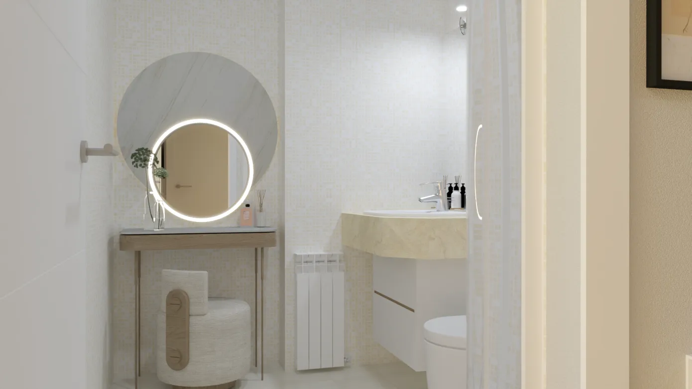

Virtual Home Staging · Madrid
Commercial-ready visuals without physical intervention: credible layout, controlled scale, and consistent material/light criteria across rooms and viewpoints.
Context
Working frame: start from the real conditions and define consistency rules so the commercial material remains accurate and defensible.
This brief is sales-driven: a property for sale with a confusing listing and little help for a buyer to imagine real use. The goal is not “decorating”, but making the home legible through credible layout, defendable proportions and a controlled material/light continuity that lets the property read as one coherent whole.
For the final set to work, every view must follow the same logic: proportion, workable circulation, use fronts and relationships between rooms. Without that shared base, the result becomes a sequence of disconnected images.
Approach
Decision base: usable geometry, layout logic and view axes. Upfront control so the set is defendable in terms of scale and real use.
A working plan (furnishing layout + zoning + dimensional checks) was set as a prerequisite layer before rendering. This phase acts as a “technical filter”: it validates clearances, use fronts, turning radii and alignments, ensuring each view is supported by the same spatial logic.
With that base, the governing criteria were defined for all images: layout (true-to-scale pieces, no crowding, workable circulation), clearances (coherent minimum distances), view axes (consistent framing) and continuity (palette, finishes and lighting kept in a controlled neutral band to preserve unity).

Proposal
Light staging and deliberate neutrality: maximise commercial compatibility without imposing a style.
A coherent layout is defined by zones (entry, day area, night area) using scale-controlled pieces and clear alignments, avoiding visual noise and keeping circulation workable.
Materiality and lighting remain within a restrained neutral band to increase buyer compatibility: continuity across rooms, controlled contrast and minimal focal points to guide the reading of the space.

First read
Minimal, credible layout to establish threshold, circulation and scale from the entrance.

Zone alignment
Proportions and clearances so dining and living read as one continuous day area.

Defendable scale
True-to-scale pieces, no crowding: readable circulation and believable furnishing capacity.
Consistency across rooms
A single criterion governs both spaces: clean reading, credible scale and material continuity so the full set remains coherent in the listing.



Atmosphere control
Neutral materiality and controlled light to keep the full set calm and consistent.
Set validation
Final check: room-to-room continuity, use hierarchy and cross-view alignment.
Overview
Cross-view consistency and a clear step from the real state to the proposal, with scale and proportions kept under control.
The result is validated in the comparison: starting from the real state, the proposal clarifies the space without changing its underlying logic. The home is presented as a readable whole, with a clear use hierarchy and a credible furnishing layout.
The final material is ready for listing and dossier use: images that agree with each other, decisions that can be repeated and no contradictions in scale or ambience. Process-wise, the set works because it follows a prior base (plan + criteria), not ad-hoc styling per view.


Service without physical intervention: the visualisations represent a proposed layout and ambience for commercial communication, based on the dimensional information provided.

{kind=link}
{kind=link}
{kind=link}
{kind=link}